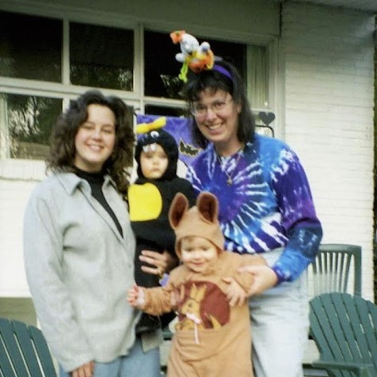
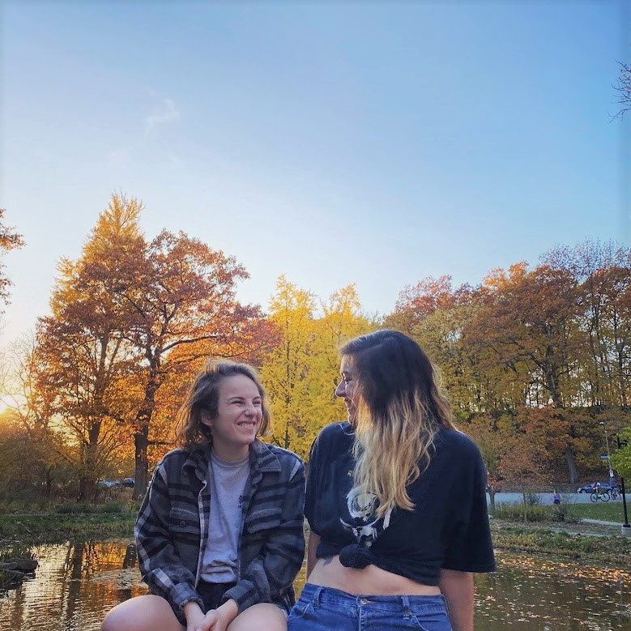
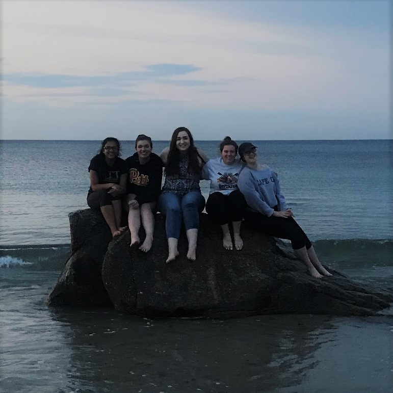
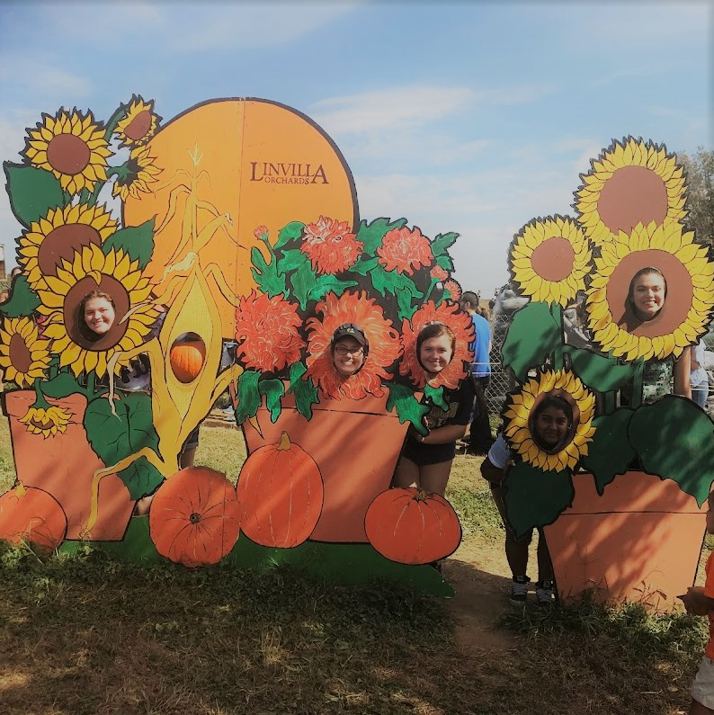
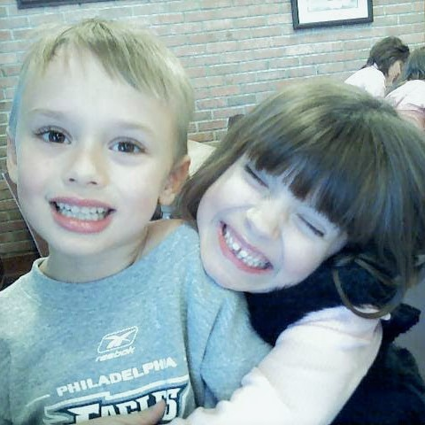
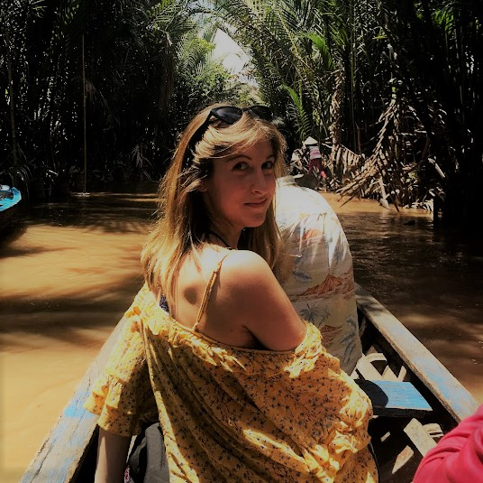
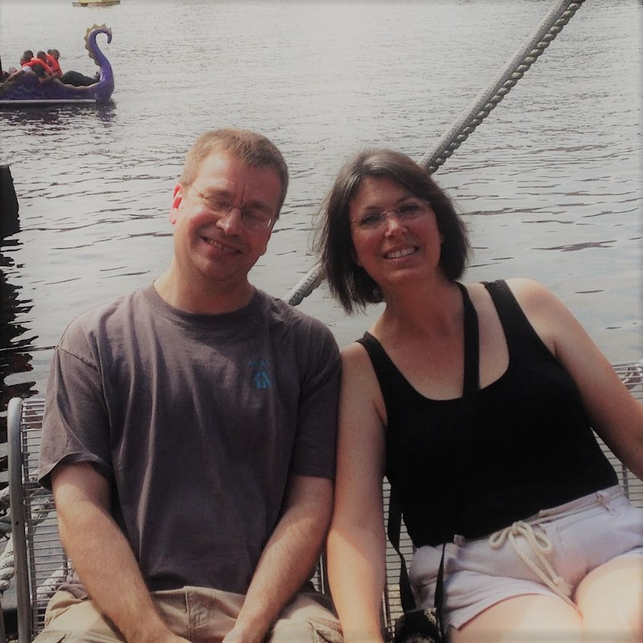
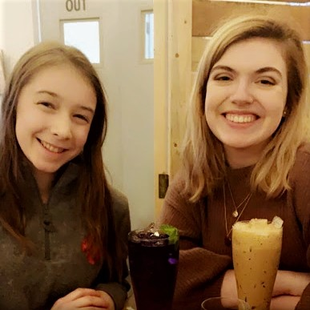
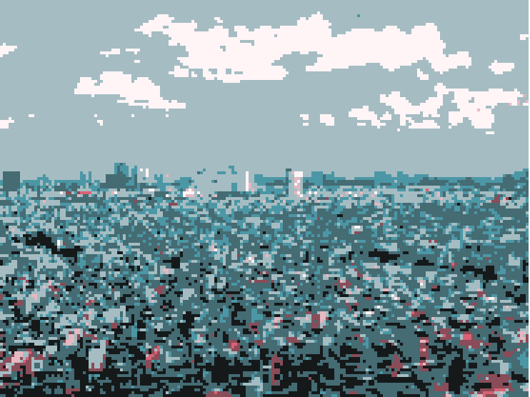
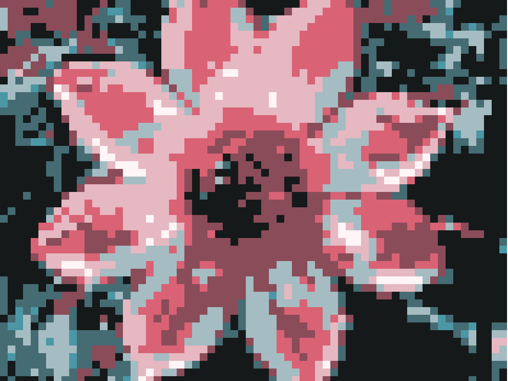

I want to work at the intersection of public and environmental health. Our lives are inextricably tied to our surroundings. Just as we impact the world around us, how we breathe, eat, and live is affected by the environment. Through my career, I hope to mitigate environmental harm.
Family and Home








These are some of the people that made me! My family is all of those I love and who love me in return.
My parents, seen in the top right, gave me my rationality and sense of humor. I am incredibly thankful for all that they've done.
The top row also includes people I was raised with. We went to the same schools or lived on the same street and I'm grateful I was able to grow up with them.
We're not the same people we were when we took those photos, but I think some part of me will always be there.
The bottom row, too, shows some of my favorite moments I was able to catch on camera. I'm grateful for those who have come into my life since starting college.
Each person has changed the way I see the world, even if I'm not explicitly aware of how.

Entertainment
I love all sorts of media! I listen to music and podcasts constantly, and have a couple TV shows and movies I'm watching at the moment, but my first love was books. I really enjoy stories. I used to write fiction in my spare time, but since it's a solitary activity, it felt lonely to me as I grew older.
The appeal of more interactive hobbies like marching band and theatre drew my attention instead, so I found myself writing and making my own stories less and less.
Something lifechanging for me was the discovery of the tabletop roleplaying game Dungeons and Dragons.
I first heard about it, like many people who started playing after the 80's, through a popular Twitch channel called Critical Role, in which a bunch of voice actors livestreamed their own D&D campaign.
I was so captivated by the idea that, at its core, this game was a group of friends having fun telling a story in which they played characters. The channel has hundreds of hours of content by now and I've lost track of what their characters are up to in the current story.
But I've since had the opportunity to play in a game and even run one of my own. It's as fun as I imagined back in high school.

Community
I've had a few classes ask me to define what community means for me, and so I've collected many answers.
My hometown and school district are my communities. So is Oakland, Pitt, and the Swanson School of Engineering. Narrowing it further, I'm a member of the environmental engineering community at Pitt, as small as we are.
Expanding outwards, I also try to subscribe to Leopold's land ethic when I can remember I'm a member of the biotic community. Socially, I'm also a member of the LGBTQ community, as diverse in experiences as that is. In the everyday, I find community with my friends and aquaintances.
School
I'm thankful for the opportunities to learn that have been presented to me. I'm currently studying environmental engineering and public and professional writing here at Pitt. As a result, I've been able to do some great things.
I studied abroad my freshman year to study globalization and development in Vietnam for two weeks, which was the first and only time I've left the country (so far!). I've also worked at a local branch of an international environmental firm as part of the co-op program.
I've written countless papers and exams. I've had great group projects and ones I'd rather just forget. And as I'm coming up on my last few semesters at Pitt, it's so strange to think about how much my schooling will change from here. What does learning look like as an adult outside of a rigid academic structure? I don't know and I'm nervous and excited to find out.